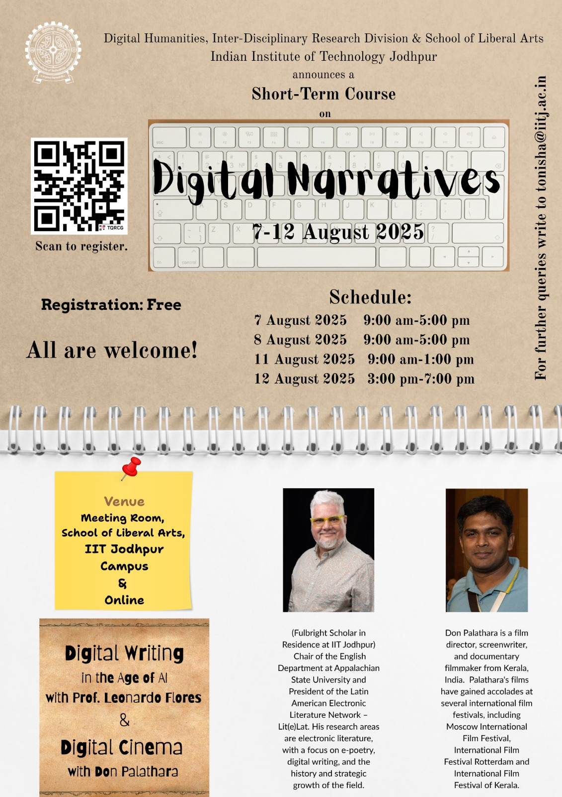

Leo @ IIT Jodhpur

From August 3-16, I will be visiting the DH community at IIT Jodhpur and beyond for the next 2 weeks. This visit was made possible by the Fulbright Specialist Program, The United States-India Educational Foundation, and my IIT Jodhpur hosts: the School of Liberal Arts and the following faculty in the Digital Humanities program: Parichay Patra, Natasa Thoudam, and Tonisha Guin.
This is the first time I visit India, and I’m very excited about it. It will be great to spend time in person with folks I’ve known online for years. And all this became possible thanks to many people, but especially Roy Samya, with whom I’ve enjoyed mentoring and learning from for the past 2+ years, and whose dissertation I’m proud to have co-chaired with Dr. Patra.
Activities

- On August 7, 8, and 11 I will offer a short course, titled Digital Writing in the Age of AI.
- On August 6 and 8 I will visit Dr. Natasa Thoudam’s Digital Humanities class. Here’s the resource I will be using for these visits.
- On August 14 I will offer a public lecture, titled “The Importance of Digital Writing in the Age of AI“
- The rest of my visit will be dedicated to connecting with the DH community at IIT Jodhpur.
About My Work
- Research on AI
- MLA-CCCC Joint Task Force on AI and Writing (2023-2025)
- See 3 working papers I co-authored in this AI Task Force here.
- MLA Task Force on Generative AI Technologies (ongoing)
- You can see slideshows and recordings of my presentations here in my blog.
- Editorial / Curatorial work
- Taper (2020-present)
- Antología Lit(e)Lat, Vol. 1 (2020)
- Electronic Literature Collection, Vol. 3 (2016)
- The NEXT (co-founder)
- Research in digital writing and electronic literature
- “Seven Decades of Computational Literature and Cyborg Writing Practices” (2024)
- “Antología Lit(e)Lat, Volumen 1: Avatares arqueológicos y retos editoriales” (2023)
- “Third Generation Electronic Literature” (2019) – my critical hit!
- Tedx Talk (2015)
- I ❤️ E-Poetry (2012-2018)
- Creative coding
- WordHack Performance and Recent Creative Works (2025)
- See more posts on my creative work here in my blog.
- Workshops and Resources
- Academic Leadership
- Chair of the English Department at Appalachian State University (2019-present)
- President of Lit(e)Lat (Latin American Electronic Literature Network, 2024-present)
- President of the Electronic Literature Organization (2019-2022)
If you’d like to connect on social media, these are the networks I use:
- Instagram: @cyberleoflores
- Bluesky: @leoflores.bsky.social
- Facebook: facebook.com/leonardoflores
Categories: News